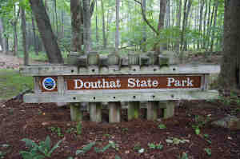

| 
Thomas DOUTHIT |
Thomas DOUTHIT 4015
General Notes: A John Douthit, about the same age as Thomas, was living on Monocacy Hundred at the same time. His name appears among the list of taxables in 1733. On May 2, 1740, he had his daughter Elizabeth baptized (Pioneers of Old Monocacy, page 238). He settled just north of Robert Wilson on "Douthet's Chance," which he had surveyed February 25, 1742. He sold in 1750. A John Douthit was on Captain Stephen Ransberger's Frederick County Muster Rolls for 42 days in 1757. A John Douthid, born 1709, was among Men Living at Hope Plantation, 1780. (Moravian Families of Carroll's Manor, page 110). Noted events in his life were: • Witness: Inventory of Joseph Hedges, 27 Feb 1733, , Prince George's Co., Maryland. 4018 • Tax Lists, 1733, Monocacy, Montgomery Co., Maryland. 4019 • Fact, 1734. 4020 • Testimony, 1764, , Hampshire Co., (now West) Virginia. 4021 • Employment: Constable Of Monocacy Hundred, 1735, Monocacy, Montgomery Co., Maryland. 4022 • Witness, 1747. 4023 • Deed, 1761. 3711 • Witness, 1764. 4024 • Testimony, 1772, , Monongalia Co., Virginia. 4025 Thomas married Mary HEDGES, daughter of William HEDGES and Mary. (Mary HEDGES was born about 1677.) |
|
only search Stockdale Coddington Genealogy |
Table of Contents | Surnames | Name List
This website was created 9 Apr 2025 with Legacy 10.0, a division of MyHeritage.com; content copyrighted and maintained by coddgenealogy at gmail d0t com